Final Fantasy I Remake Demo
Our Final Fantasy I remake demo represents 8 months of intensive development, showcasing how the Wurst Gaming RPG Engine can recreate classic JRPG experiences. Using our Game Actions scripting and UI Framework, we built a complete turn-based combat system, job classes, and progression mechanics that faithfully recreate the original Final Fantasy experience.
This demo proves the engine's flexibility - the same tools used to create this classic Final Fantasy remake could just as easily build modern roguelikes, tactical RPGs, or completely original game systems. Choose your party of 4 from Fighter, Thief, Black Belt, Red Mage, Black Mage, and White Mage.
8 Months
Development Time
6 Classes
Fighter, Thief, Black Belt, Red Mage, Black Mage, White Mage
Full Combat
Turn-based battles with spells & items
8-bit Style
Classic pixel art aesthetic
Screenshots Gallery
Take a visual tour through our Final Fantasy I remake demo, showcasing everything from the opening town to intense combat sequences.
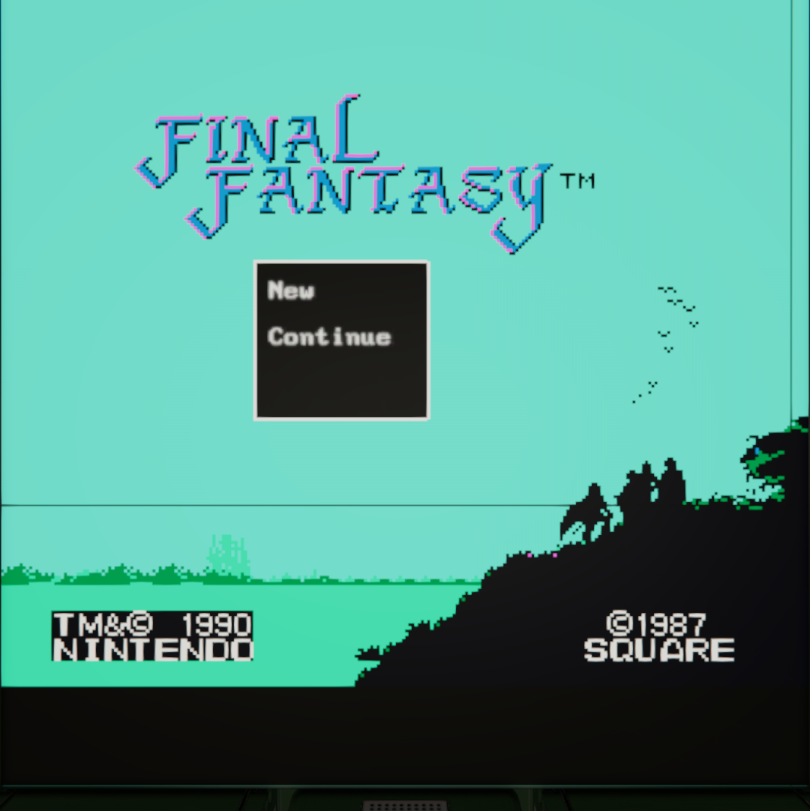
Title Screen
The adventure begins with a title screen offering New Game and Continue options. New Game lets you customize your party jobs, while Continue uses the default party setup.
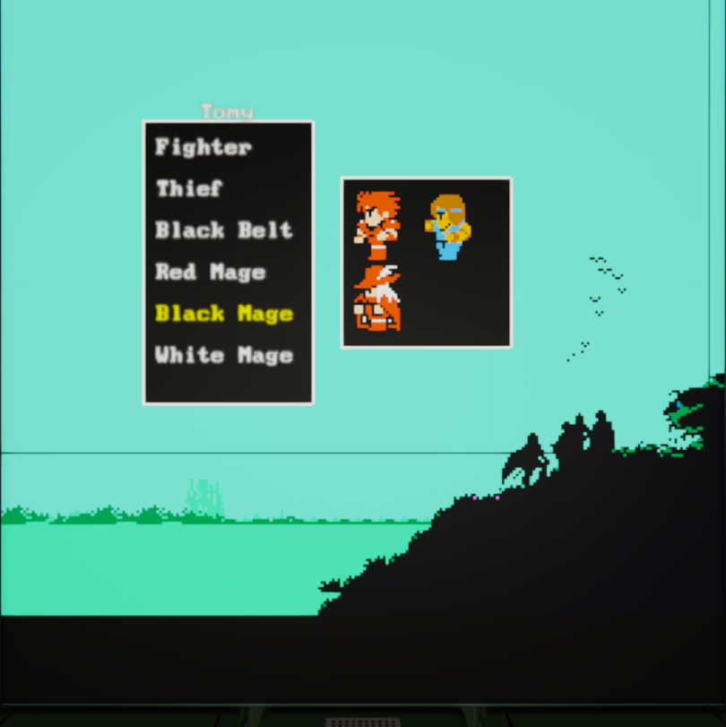
Party Job Selection
Choose jobs for each of your 4 party members from 6 available classes: Fighter, Thief, Black Belt, Red Mage, Black Mage, and White Mage. Each class offers unique abilities and playstyles.
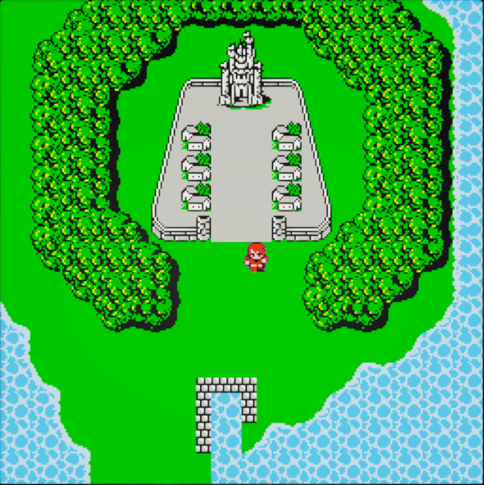
World Map Start
Begin your journey on the world map just outside the peaceful town of Conaria, where your adventure as the Light Warriors truly starts.
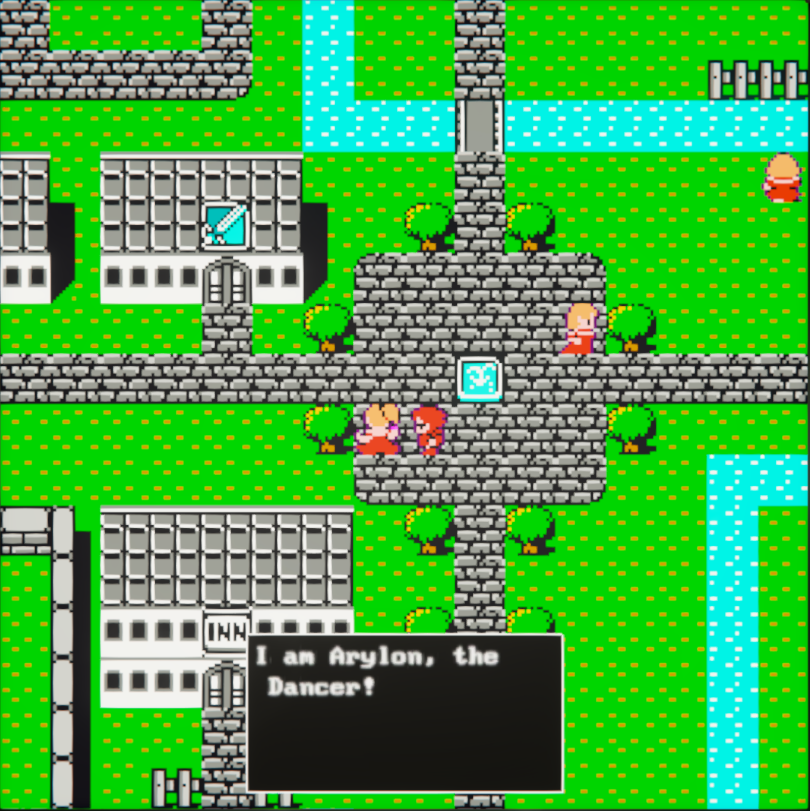
NPC Interactions
Engage with townspeople in Conaria to gather information, learn about the world, and receive guidance on your quest to restore light to the crystals.
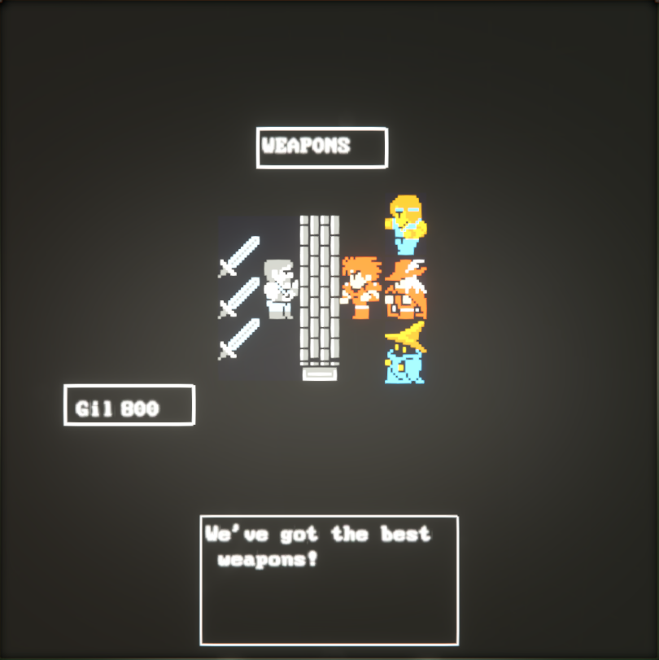
Weapons Shop
Visit the weapons shop to equip your party with better gear. Each job class can use different weapon types, so choose wisely for your party composition.
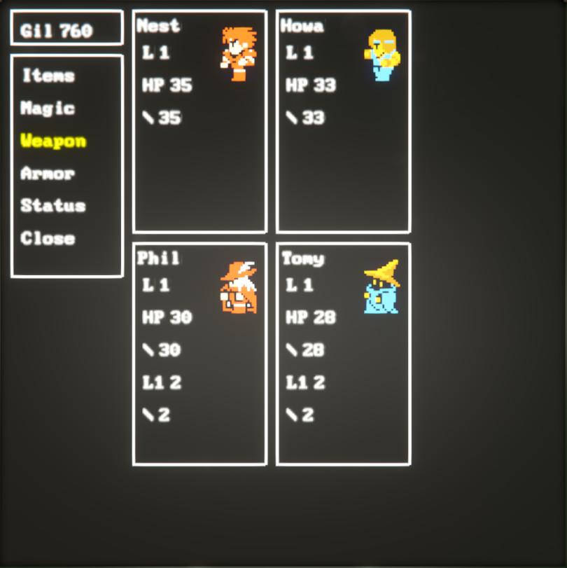
Game Menu
Access the comprehensive game menu to view party stats, manage equipment, use items, and cast spells. The interface provides easy access to all party management functions.
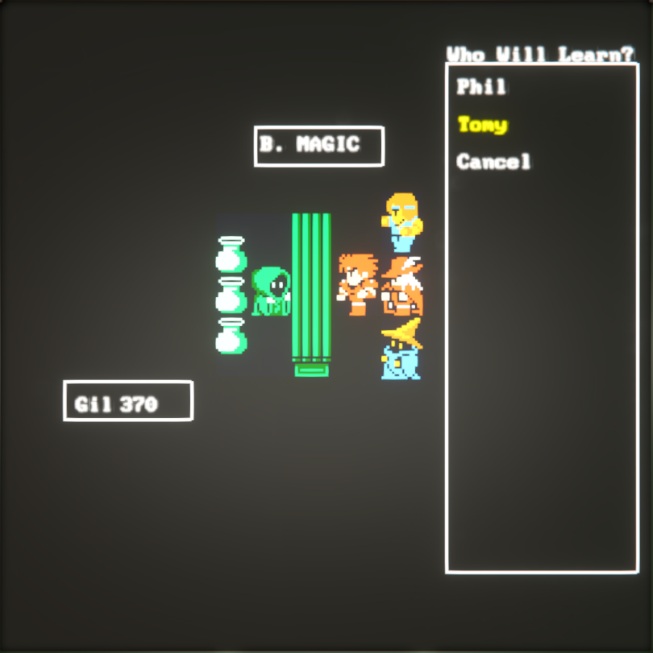
Black Magic Shop
Purchase powerful offensive spells at the Black Magic shop. Stock up on Fire, Ice, Lightning, and other devastating spells for your spellcasters.
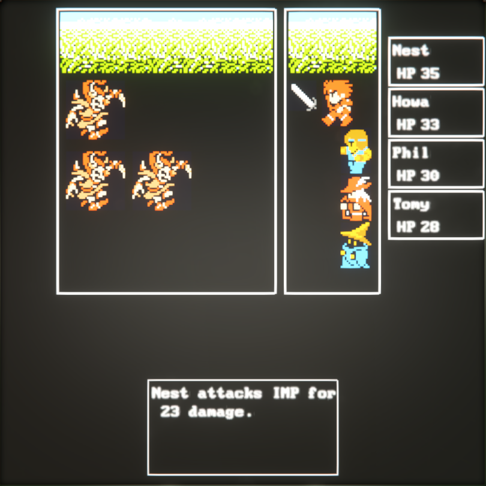
Combat: Fighter vs Imp
Watch the Fighter class in action as they attack an Imp with their weapon. The turn-based combat system brings classic JRPG battles to life.
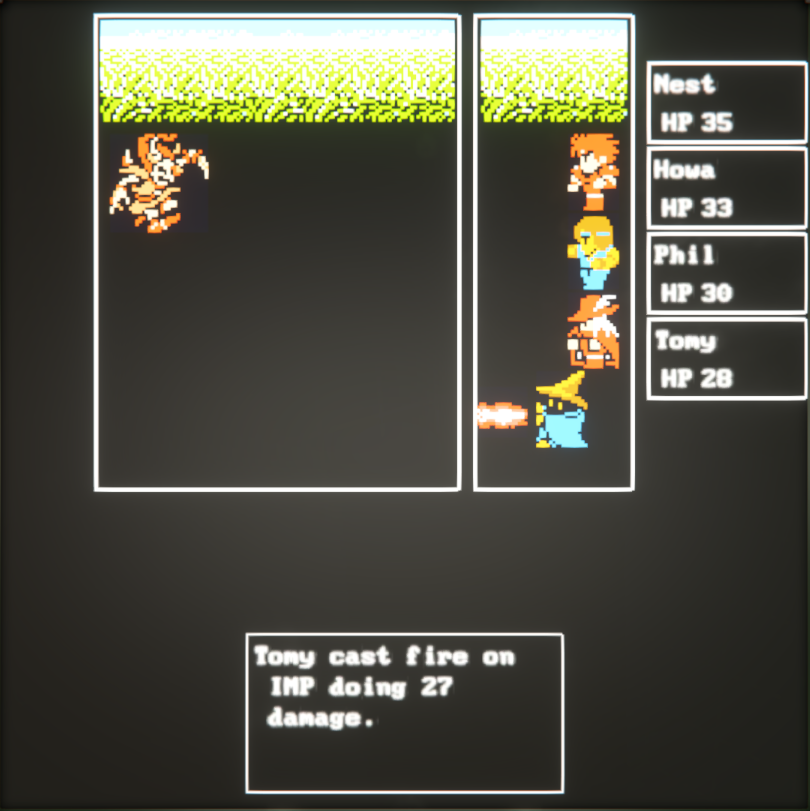
Combat: Fire Spell
See the Black Mage unleash the Fire spell against an Imp, showcasing the magic system with visual spell effects and damage calculations.
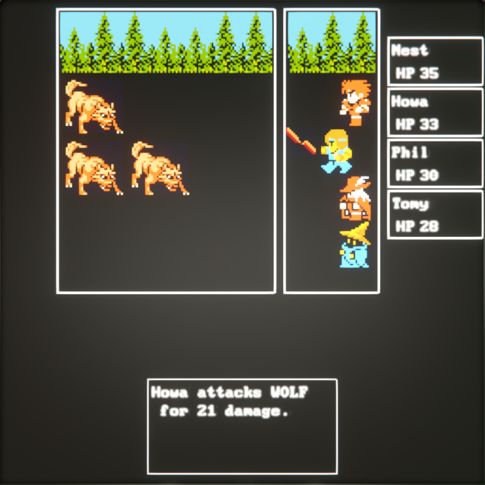
Combat: Black Belt vs Wolf
The Black Belt demonstrates their martial arts prowess in battle against a Wolf, showing the unique combat style of this unarmed fighter class.
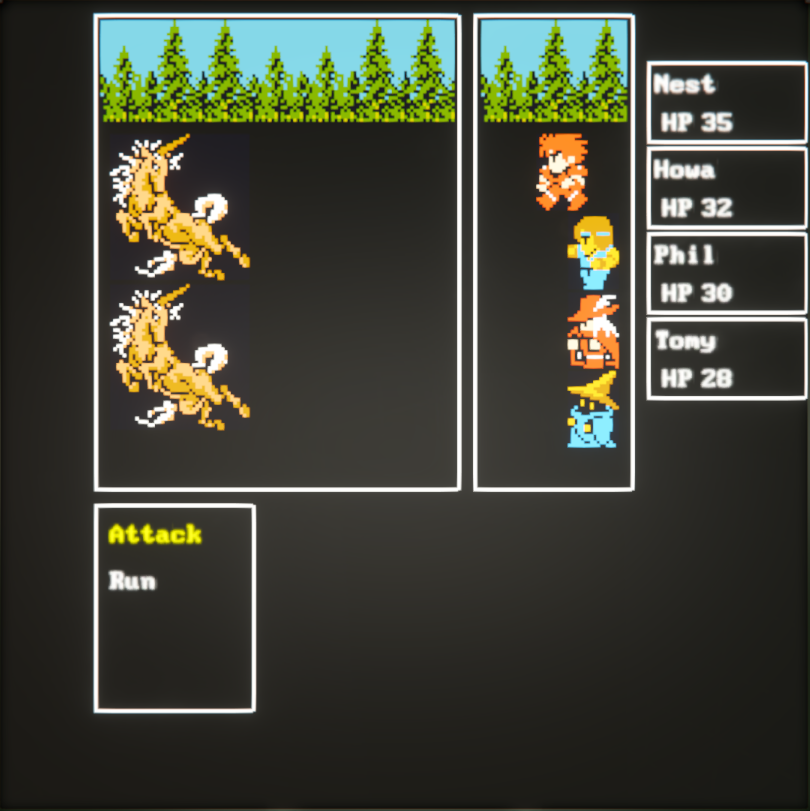
Combat: Mad Pony Encounter
Face off against a Mad Pony as the Fighter prepares their attack. Each enemy type requires different strategies and tactics to defeat.
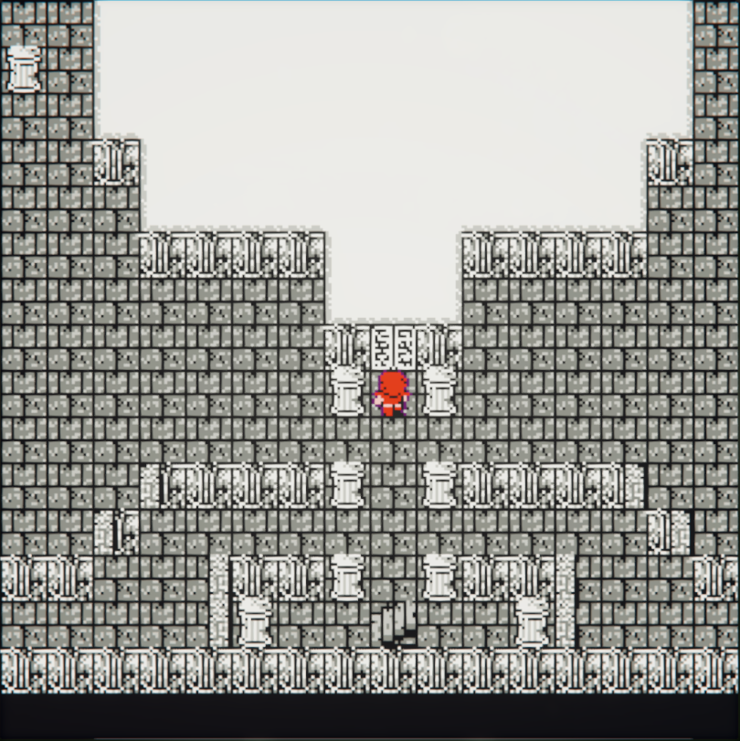
Temple of Fiends
Approach the ominous Temple of Fiends with the ceiling architecture visible, showcasing the detailed dungeon design and atmospheric building.
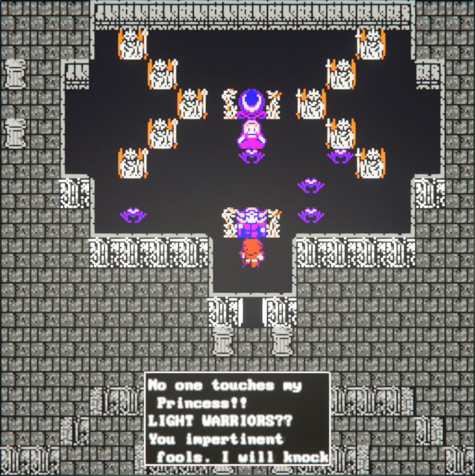
Boss Chamber Interior
Enter Garland's chamber with the ceiling hidden to reveal the interior layout. The engine's dynamic visibility system lets you see inside rooms clearly.
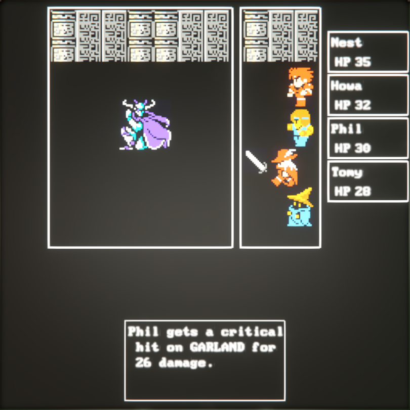
Garland Boss Fight
Face the fallen knight Garland as the Red Mage launches an attack in the climactic boss battle that caps off the demo experience.
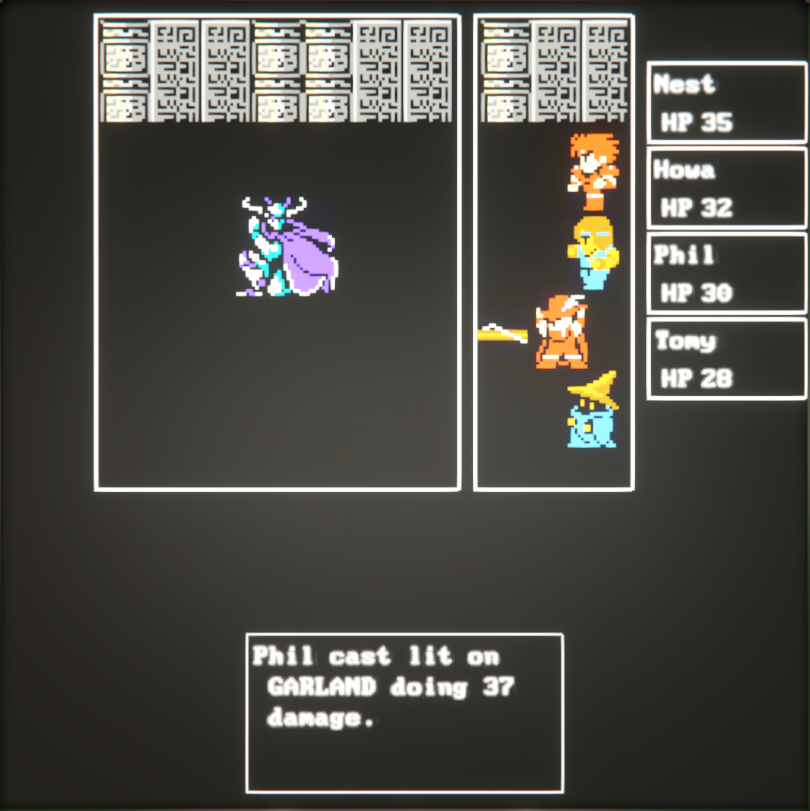
Boss Battle Magic
Watch the Red Mage cast the powerful Lit spell against Garland, demonstrating the advanced magic system in the ultimate boss encounter.
Engine Features Showcase
🗺️ Map Editor
Custom 8-bit style map editor with layered tile system, NPC placement, and seamless area transitions.
🎭 Game Data Structure
Built-in data management for party members, enemies, items, skills, and equipment - the foundation for any RPG system.
📜 Game Actions
Powerful scripting system for creating combat systems, job classes, NPCs, shops, dialog, and any game logic you can imagine.
🎨 UI Framework
Flexible UI builder for creating custom menus, battle interfaces, character screens, and any interface your game needs.
🌍 World Building
Complete world map system with towns, dungeons, encounters, and story progression tools.
⚙️ Customizable Everything
Create any style of RPG - from classic Final Fantasy to modern roguelikes - using our flexible scripting and UI tools.
Experience the Demo
Our Final Fantasy I remake demo represents 8 months of intensive development, showcasing the full capabilities of the Wurst Gaming RPG Engine. From character creation with 6 available job classes to the epic showdown with Garland, experience classic JRPG gameplay reimagined in a modern engine.
System Requirements
- Space Engineers (latest version)
- Wurst Gaming RPG Engine Workshop Collection
- Recommended: Gamepad or keyboard for optimal experience
- Audio recommended for full atmospheric experience
🎮 Demo Available Now!
The complete Final Fantasy I remake demo is now available on Steam Workshop! Experience the full combat system, explore Coneria, fight Garland, and discover how our RPG Engine recreates classic JRPG magic.
Share Your Experience
We'd love to hear your thoughts on our Final Fantasy I remake demo! Whether you're a classic RPG fan, a Space Engineers enthusiast, or just curious about indie game development, your feedback helps us improve.
📺 YouTube Comments
Leave feedback on our dev log videos to share your thoughts and suggestions.
🎮 In-Game Testing
Try the demo yourself and let us know about any bugs, balance issues, or improvement ideas.
📧 Direct Contact
Reach out through our contracts office for detailed feedback or collaboration opportunities.